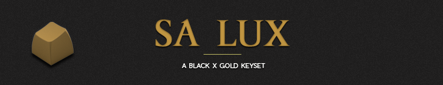
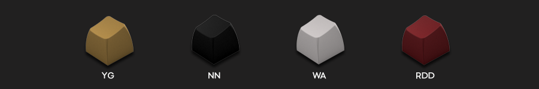
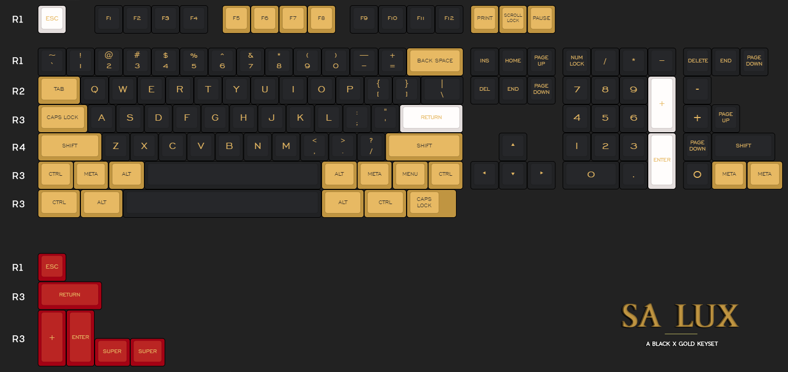

SA Lux is a keyset inspired by the timelines blend of black and gold, with minimal white and red accents.
The set aims to be subtle and blend in with the majority of current keyboards, both commercial and custom.
The set features SA high profile keycaps manufactured by the up and coming MaxKeys in China, making it an affordable, one kit keyset.
Given the current manufacturer's limitations, there will not be any novelty keys or international kits, but the majority of ANSI layouts are supported.
The Group Buy will be held on StoreUni.com, as the main focus of this GB is on the Malaysian Mechanical Keyboard Community.
You can also vist the Geekhack forum thread for the international GB that will happen soon.
Colours are taken from Signature Plastics ABS colour rings, but more details will be released once we receive the samples. The colour codes are:

The set:

Designed by beamingrobot.